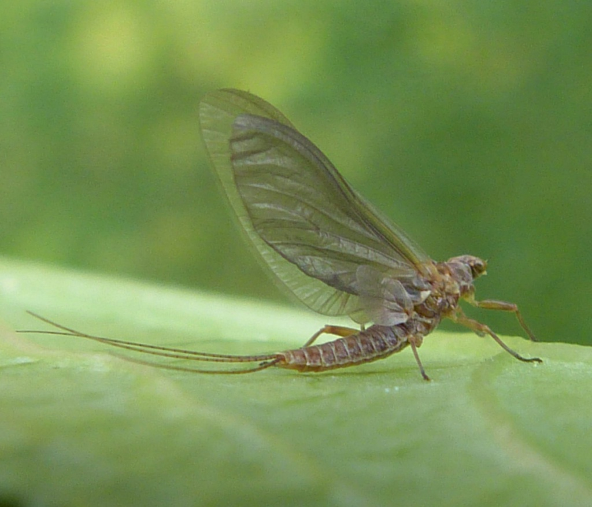
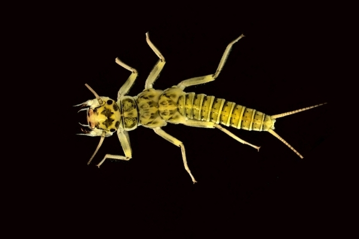
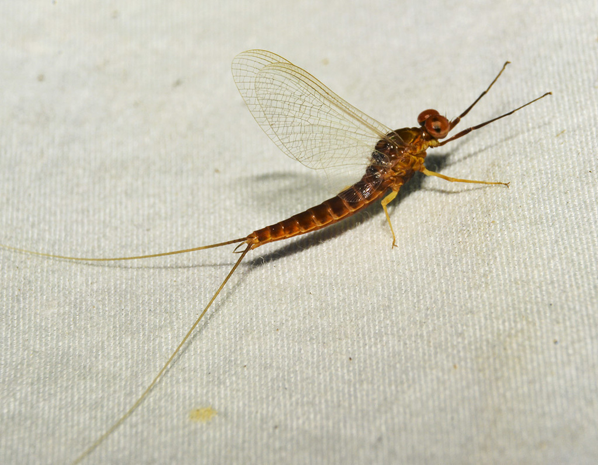
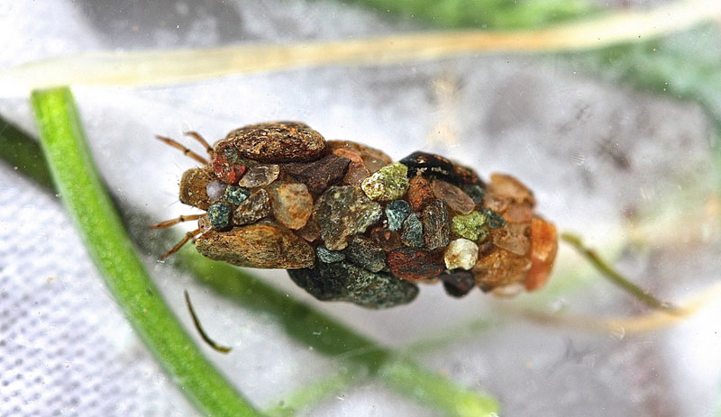

March
Little Black Stonefly
Small dark fly that hatches early in cold water.


April
Blue Wing Olive
Tiny olive-colored mayfly, active during overcast days.

May
Hendrickson & Caddis
Classic hatch for dry fly fishing, paired with caddis activity.

June
March Brown, Sulphur, Green Drake
Great dry fly month—expect Mayflies, Sulphurs, and Drakes.
July
Terrestrials & Golden Stonefly
Big bugs dominate: beetles, ants, hoppers, and golden stones.

August
Hoppers, Ants, Beetles
Warm banks are alive with terrestrial activity.

September
Blue Wing Olive & Isonychia
Mayfly reemergence brings back small olives and Isonychia.

October
October Caddis & BWO
Final big fall hatches—large caddis and Blue Winged Olives.
